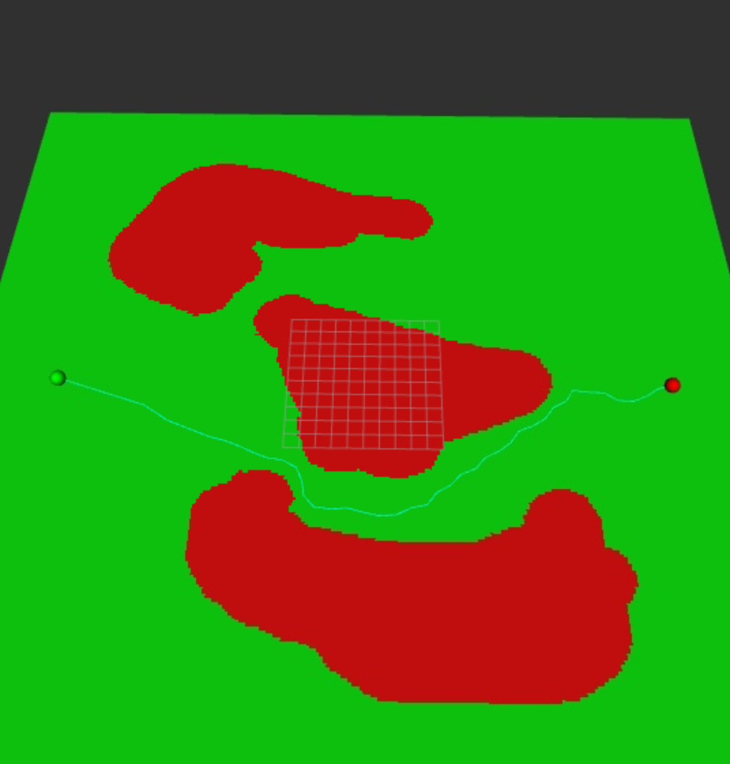
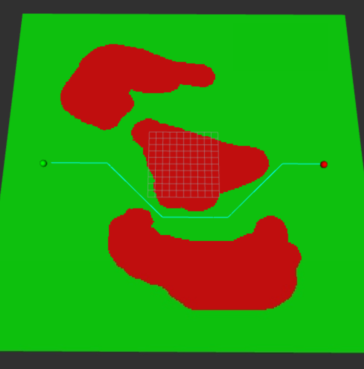
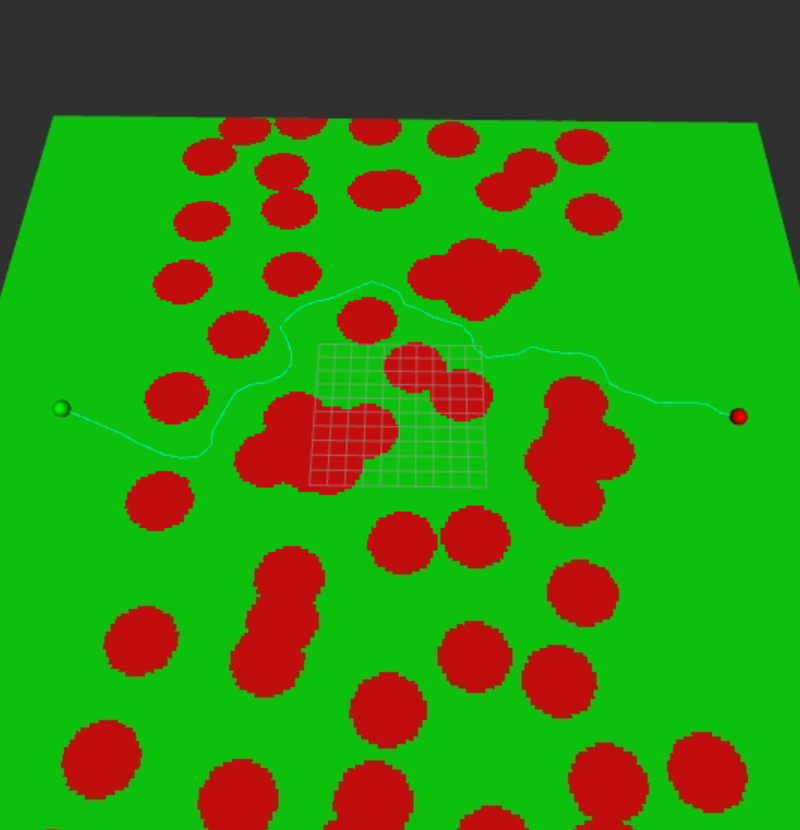
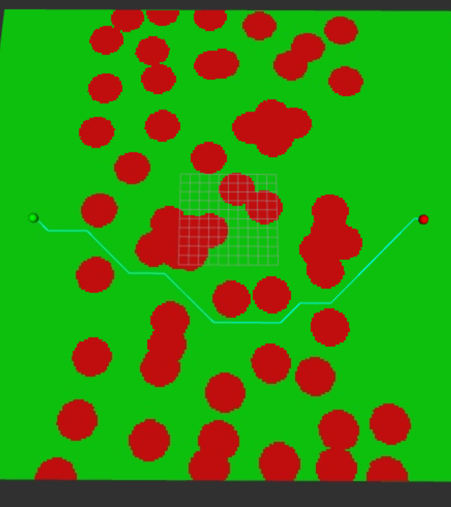
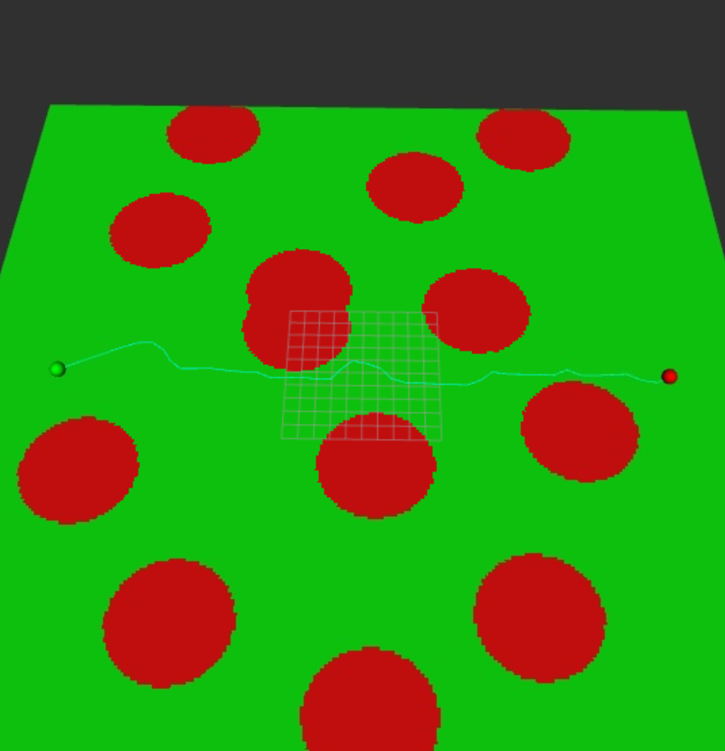
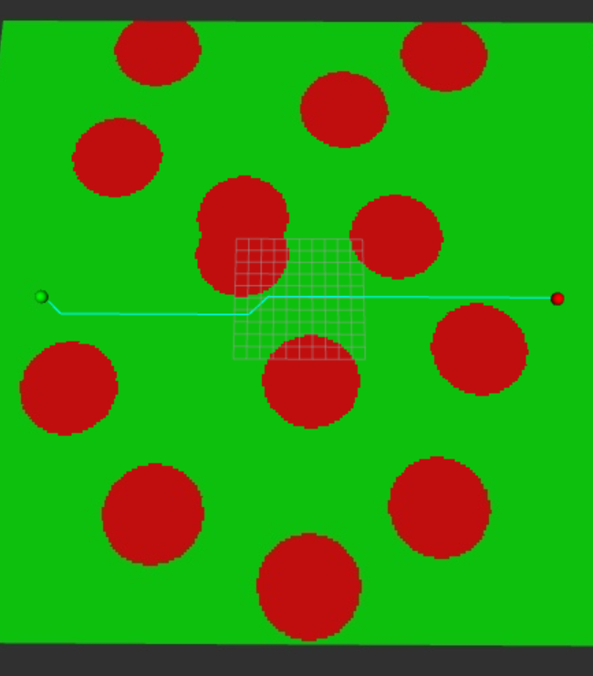
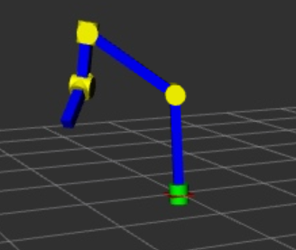
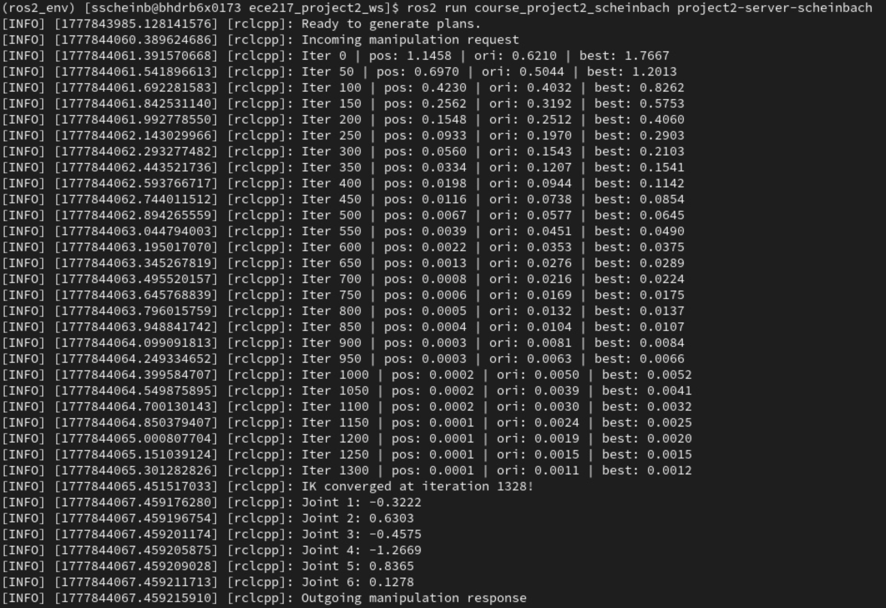

Robotics Coding Projects
Two planning systems written in C++ with ROS2: path planners that move a mobile robot through cluttered maps, and an inverse kinematics solver that drives a six joint robot arm to a target pose.
- Course
- ECE 217 Robot Motion Planning and Manipulation
- Languages
- C++
- Tools
- ROS2, RViz, Boost program_options
Project 1: RRT and A* path planning
I implemented two motion planners for a differential drive robot, modeled as a cylinder of radius 0.25 m moving in SE(2), so each state is a position and a heading. Both run as ROS2 service servers behind the same custom PlanningQuery service. A client node loads an occupancy grid map, reads the start and goal poses from the command line, and requests a plan. The path is then published for display in RViz.
The RRT planner grows a tree from the start by sampling random points and extending toward them in 1 m steps, with a 10% goal bias that pulls the tree toward the goal. Collision checking inflates the robot's footprint onto the map grid, and the distance metric adds the heading change needed to reach a node to the straight line distance, which favors smoother paths. The A* planner searches a 0.5 m grid with a heuristic of straight line distance plus the rotation needed to face the goal, which never overestimates the remaining cost, so the search stays optimal at the grid's resolution.
Both planners found collision free paths on all three test maps, each in under 0.03 seconds against a 10 second budget. A* produced lower total cost on every map, mainly because it accumulated far less rotation than RRT's randomly sampled paths.
| Map | Planner | Time (s) | Distance (m) | Rotation (rad) | Cost |
|---|---|---|---|---|---|
| 1 | RRT | 0.0234 | 47.25 | 14.52 | 61.77 |
| 1 | A* | 0.0014 | 45.63 | 3.14 | 48.77 |
| 2 | RRT | 0.0077 | 55.23 | 19.99 | 75.21 |
| 2 | A* | 0.0023 | 48.41 | 7.07 | 55.47 |
| 3 | RRT | 0.0015 | 43.38 | 13.49 | 56.87 |
| 3 | A* | 0.0006 | 40.54 | 2.36 | 42.89 |
Cost is distance plus rotation, weighting 1 m the same as 1 rad. Every run went from (−20, 0, 0) to (20, 0, 0).






Project 2: Inverse kinematics for a 6 DOF arm
I built a manipulation planner for a six joint anthropomorphic arm with a spherical wrist, modeled with Denavit-Hartenberg parameters and animated in RViz. A client node sends the arm's current joint angles and a goal pose, given as a position and a unit quaternion, through a custom ManipulationQuery service, and a server node solves for the joint angles that reach it.
The server uses the unit quaternion formulation of inverse kinematics from Siciliano's Robotics: Modelling, Planning and Control. Each iteration computes forward kinematics, converts the end effector's rotation matrix to a quaternion, stacks the position and quaternion orientation errors into a six dimensional error vector, and computes the geometric Jacobian. A damped least squares update, which stays stable near singular configurations, then sets the joint velocities. A hemisphere check keeps the orientation error pointing the right way, and if the error stops improving for 3000 iterations, the solver randomizes the joints to escape the local minimum while keeping the best solution found so far.
On the assignment's test case, the solver converged at iteration 1328, well inside the 5 second limit. Position and orientation error fell from 1.1458 and 0.6210 to below the 0.001 tolerance.

